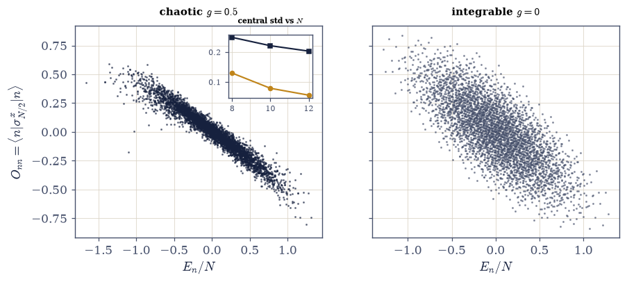
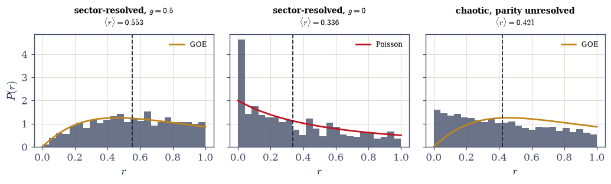
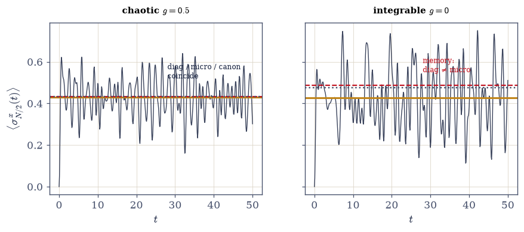
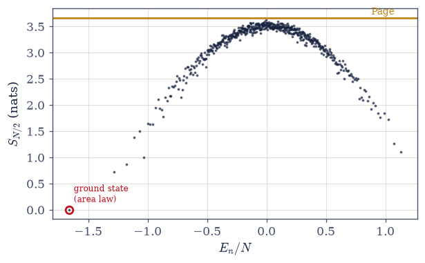
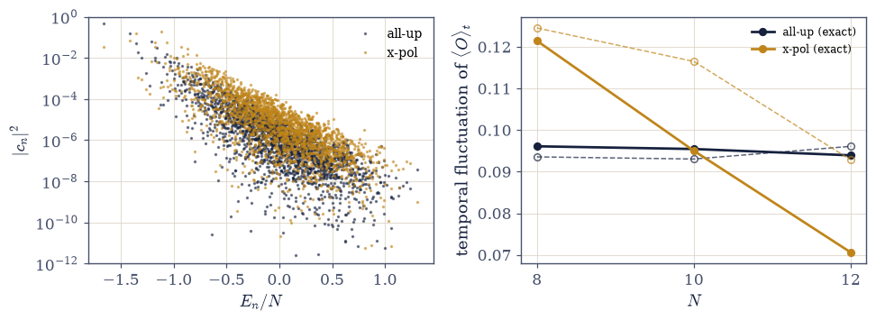

7.22 Eigenstate Thermalization: Why Isolated Systems Forget#
Notebook overview#
Movement VII holds a single notebook, and it turns the volume’s machinery on the volume’s own foundations. Every thermal state computed here so far was manufactured by fiat: a bath was coupled, an ensemble was postulated, and the formalism performed so well that its strangest assumption went unexamined. Why does anything thermalize? An isolated quantum system evolves unitarily; every occupation \(|c_n|^2\) of every energy eigenstate is conserved forever; nothing is ever forgotten. And yet a gas of cold atoms in a box, isolated from its environment to exquisite precision, relaxes to states the canonical ensemble describes. The resolution is the eigenstate thermalization hypothesis (ETH): in a chaotic system, thermal behaviour is not imposed by surroundings but written into each individual energy eigenstate, and time evolution merely dephases the bookkeeping.
The notebook’s great internal arc is that the crown of §7.19 becomes the obstruction of §7.22. The transverse-field Ising chain — the volume’s own exactly solved model, its free-fermion integrability celebrated across Movement V — is precisely what fails to thermalize: its extensively many conserved mode occupations give memory somewhere to live. One added longitudinal field (\(h = 1.05\), \(g = 0.5\), the standard robustly chaotic point) breaks the integrability and restores thermal behaviour, so the exactly solved chain serves throughout as the control against which chaos is measured. Four headline results carry the argument. The ETH band: eigenstate expectations \(O_{nn}\) collapse onto a smooth function of energy whose scatter narrows with system size for the chaotic chain and refuses to narrow for the integrable one. Level statistics: chaos shows in level repulsion (\(\langle r\rangle \approx\) the GOE value) and integrability in level indifference — but only after every symmetry is resolved, and the trap of skipping that step is demonstrated before it is repaired. The quench: an isolated chain, evolved unitarily from a product state, relaxes onto its diagonal ensemble and matches the microcanonical and canonical answers at the third decimal, while the integrable control misses by twenty times that margin. And entanglement: a single mid-spectrum eigenstate carries nearly maximal (Page) entropy in each half chain — when a subsystem looks thermal, its bath is the rest of the same wavefunction. The fine print closes the arc honestly: ETH’s guarantees are statements about states with large effective dimension, and the notebook’s own cold initial state demonstrates what happens outside that regime.
This capstone closes the volume’s thematic arc. For readers who want the many-body gateway itself, an optional Coda (§7.23–§7.25) follows after this notebook, outside the arc; the course’s Epilogue follows separately.
Conventions (this notebook). Spins live on sites \(0 \dots N-1\); basis states are the integers \(0 \dots 2^N - 1\) with bit \(i\) the spin on site \(i\) (bit 0 = up, \(\sigma^z = +1\)). The chain is open (OBC), deliberately: open boundaries kill translation symmetry, leaving exactly one discrete symmetry (reflection) to resolve, and Exercise 3 resolves it. Couplings \(J = 1\) throughout; the chaotic point is \((h, g) = (1.05, 0.5)\) and the integrable control is \(g = 0\) (the chain of §7.19). The observable is \(\sigma^x\) on the middle site \(N/2\). Every full spectrum is computed ONCE by dense
numpy.linalg.eighand cached in a dict keyed by \((N, g)\) — a \(4096^2\)eighcosts seconds, and an early draft of this notebook’s verification died of repeated recomputation, so the economy is not optional. Eigenstate expectations usenumpy.einsum('in,ij,jn->n', V, O, V, optimize=True), never a loop of matvecs. Time evolution is spectral, vectorized over the grid vianumpy.exp(-1j*numpy.outer(ts, ev)). The ETH-band scatter is measured over the central 10% of each spectrum’s energy range; \(r\)-statistics use the central 60% of the sector spectrum with gaps below \(10^{-12}\) dropped (the integrable spectrum’s genuine degeneracies are physics, not noise). \(\beta_{\mathrm{eff}}\) is solved byscipy.optimize.brentqon \(\langle H\rangle_\beta = E_0\) with ground-shifted weights (the discipline of §7.4); half-chain entropy is thereshape+numpy.linalg.svdof §7.19 with the \(10^{-14}\) Schmidt floor.How to read the checks. Each exercise closes with a
validatecall against an independent fact: the dephasing derivation against a measured time average; the band narrowing against its measured trend; the \(r\)-statistics against the GOE and Poisson constants; the three ensembles against one another; the entanglement against Page’s value; the fine print against the exact dephasing variance. A ✓ is strong evidence; a ✗ is a prompt to locate the discrepancy.Scope. Bosonic cold-atom experiments, the generalized Gibbs ensemble, and many-body localization are outward horizons; the many-body gateway (second quantization, Green’s functions, linear response) is taken up in the volume’s optional Coda, §7.23–§7.25. See Deutsch, Phys. Rev. A 43, 2046 (1991); Srednicki, Phys. Rev. E 50, 888 (1994); Rigol, Dunjko & Olshanii, Nature 452, 854 (2008); D’Alessio, Kafri, Polkovnikov & Rigol, Adv. Phys. 65, 239 (2016) — the review that covers everything below at full depth; Page, Phys. Rev. Lett. 71, 1291 (1993); Kinoshita, Wenger & Weiss, Nature 440, 900 (2006). Cross-reference §7.19 (the crown as obstruction; the entanglement machinery reused), §7.4 (the \(\beta\) discipline; the bath formalism here explained), §7.3 (window averaging), §5.10 (ensembles versus dynamics, classical edition), and forward to the course’s Epilogue.
Theory in brief#
The puzzle, sharpened#
Unitarity makes the conflict exact, not rhetorical. Expand any initial state in energy eigenstates, \(|\psi(t)\rangle = \sum_n c_n e^{-iE_n t}|n\rangle\): every \(|c_n|^2\) is constant forever, so an isolated system retains complete memory of how it was prepared. What CAN relax is an observable’s expectation value, because its off-diagonal terms carry oscillating phases \(e^{-i(E_n - E_m)t}\) that interfere. Averaging over a long time kills every term with \(E_n \neq E_m\) (three lines of algebra, performed in Exercise 1), leaving the diagonal ensemble:
valid when the spectrum has nondegenerate gaps (the chaotic chain satisfies this; the integrable one is marginal, and Exercise 1 states the caveat honestly). The puzzle is now sharp: the diagonal ensemble manifestly remembers the initial state through every \(|c_n|^2\), while the microcanonical average at the same energy knows only \(E_0\). Thermalization — the two agreeing — is possible only if the memory does not matter: only if \(O_{nn}\) is essentially the same for every eigenstate in the energy shell.
ETH stated#
That requirement is a strong claim about eigenstates, not about dynamics, and it is precisely what Deutsch (1991) and Srednicki (1994) proposed, with roots in random-matrix theory (Wigner’s surmise from the toolkit of §7.3, grown up). Srednicki’s ansatz packages the hypothesis in one line:
with \(O(\bar E)\) a smooth function of energy alone, \(S\) the thermodynamic entropy, \(f\) a smooth envelope, and \(R_{mn}\) order-one pseudo-random numbers. The diagonal part says eigenstate-to-eigenstate fluctuations of \(O_{nn}\) are exponentially small in system size; the off-diagonal part says the oscillating terms are individually negligible. The reading, said plainly: each eigenstate is already thermal, and dynamics merely dephases the superposition. (D’Alessio et al. 2016 review the evidence and the fine print at full depth; this notebook computes the parts a laptop can reach.)
The model, and the arc#
Testing ETH needs a system that has chaos and a knob that removes it, and the volume already owns the perfect knob. Add one longitudinal field to the transverse-field chain of §7.19:
open boundaries, the standard robustly nonintegrable point of the ETH literature. At \(g = 0\) this is the chain of §7.19: free fermions, exactly solvable, with extensively many conserved mode occupations \(\hat n_k\). Those conservation laws — Movement V’s crown — are now the obstruction: each integrable eigenstate remembers its occupations forever, so eigenstates at the same energy need not agree about anything else. One field (\(g = 0.5\)) destroys the free-fermion structure and with it the memory. OBC is chosen deliberately: it kills translation symmetry, leaving only reflection parity to resolve in Exercise 3.
The ETH band#
The hypothesis’s diagonal part is directly measurable: compute every \(O_{nn}\) (one
einsum) and plot against \(E_n\). If ETH holds, the scatter about the smooth band narrows
as \(N\) grows; if conservation laws protect memory, it does not:
measured below over the central 10% of each band. The side-by-side scatter is the notebook’s emblem: in the chaotic chain, eigenstates at the same energy agree about observables; in the integrable chain they disagree forever, because each remembers its own set of fermionic mode occupations.
Level statistics, and the symmetry trap#
Chaos leaves a second fingerprint, this one on the spectrum itself. Random-matrix levels repel (crossing two eigenvalues of a full matrix requires tuning more than one parameter, the lesson of §7.3); integrable levels, built from independently filled modes, ignore one another like Poisson arrivals. The clean diagnostic is the gap-ratio statistic — no unfolding of the spectral density needed, which is its whole virtue (introduced by Oganesyan & Huse; the constants are in D’Alessio et al. 2016):
The trap most treatments hide: the diagnostic works only within a symmetry sector. Superpose two independent GOE spectra (which is what an unresolved symmetry does) and levels from different sectors intersperse without repelling — chaos masquerades toward Poisson. Exercise 3 demonstrates the masquerade first, then resolves reflection parity by building the even-sector basis explicitly (bit-reversal permutation, symmetric pair combinations, \(H_{\text{even}} = B^{\mathsf T} H B\)) and issues the standing rule: resolve every symmetry before diagnosing chaos.
The quench, and three ensembles#
The dynamical test is the cold-atom experiment in miniature (Rigol, Dunjko & Olshanii 2008 made it the paradigm): prepare a product state, evolve unitarily, and ask what the long-time average agrees with. The three candidate answers come from three different chapters of this volume:
For the chaotic chain the three agree at the third decimal below — an isolated system, no bath anywhere, reproducing the canonical machinery of this entire volume. For the integrable control the diagonal ensemble misses the microcanonical by twenty times that margin: the memory carried by the conserved occupations survives. (The integrable chain does equilibrate — but to a generalized Gibbs ensemble that carries every conserved occupation as its own Lagrange multiplier; Rigol et al. named it, and it stays an outward horizon here.)
The system as its own bath#
If each eigenstate is thermal, tracing out half of one should yield a thermal reduced state, and its entanglement entropy should be nearly the maximum a random state allows. Page (1993) computed that maximum for a random pure state; for a half chain of \(N/2\) qubits,
at \(N = 12\) below (the reshape + svd machinery of §7.19, reused verbatim). A single energy
eigenstate holds nearly maximal thermal entropy in each half: volume-law entanglement is
ETH’s thermodynamic face. Said carefully, this is the reading of every bath this volume
ever coupled: when a subsystem looks thermal, its bath is the rest of the same
wavefunction, and the formalism of §7.4 is here explained rather than assumed.
ETH’s fine print#
The guarantees above are asymptotic statements about states that spread over many eigenstates, and the notebook’s own construction supplies the honest counterexample. The temporal fluctuations around the diagonal plateau are controlled (for nondegenerate gaps) by an exact identity — square the dephasing sum and average — whose size is set by the effective dimension:
The all-up initial state used in the quench sits at band position 0.08 — cold, low participation, \(D_{\mathrm{eff}} < 4\) even at \(N = 12\) — and its temporal fluctuations do not shrink with \(N\) at these sizes (measured below, honest numbers shown). ETH is not wrong; the state is simply outside the regime the hypothesis speaks about. The repair, a hotter \(x\)-polarized product state with measured \(D_{\mathrm{eff}}\) growing with \(N\), is run as an explicit code-side verification in Exercise 6, with the expected-versus-verified vocabulary used precisely.
What this notebook does not close#
The volume’s thematic arc ends here; the course does not. The many-body gateway — second quantization, Green’s functions, linear response — follows as the optional Coda (§7.23–§7.25), placed after this capstone and outside the arc, skippable without loss to anything above. The Epilogue computes, at full depth, the threads that no single volume owns. And many-body localization, ETH’s celebrated exception, where disorder does for a chaotic chain what integrability did for ours, remains an outward breath (D’Alessio et al. 2016 and the MBL reviews they cite).
Setup#
import matplotlib.pyplot as plt
import numpy as np
from scipy.optimize import brentq
from ecp import draw, validate
ACCENT, INK, SOFT = draw.ACCENT, draw.INK, draw.SOFT
RED = "#c1121f"
# Conventions: sites 0..N-1; basis integers with bit i = site i, bit 0 = up
# (sigma^z = +1); OBC; J = 1; chaotic point (h, g) = (1.05, 0.5); integrable
# control g = 0 (the chain of §7.19). Observable: sigma^x on the middle site N/2.
J_C, H_C, G_CHAOTIC, G_INTEGRABLE = 1.0, 1.05, 0.5, 0.0
def H_mixed(N, J=J_C, h=H_C, g=G_CHAOTIC):
"""Mixed-field Ising chain, open boundaries, as a dense 2^N x 2^N matrix.
H = -J sum sigma^z_i sigma^z_{i+1} - h sum sigma^x_i - g sum sigma^z_i.
The sigma^z parts are diagonal in the bit basis (z_i = 1 - 2*bit_i); each
sigma^x_i is the permutation that flips bit i. At g = 0 this is exactly
the transverse-field chain of §7.19 (free fermions, integrable); at g = 0.5 the
longitudinal field destroys the free-fermion structure and the chain is
robustly chaotic.
Parameters
----------
N : int
Number of sites.
J, h, g : float
Coupling, transverse field, longitudinal field.
Returns
-------
numpy.ndarray
The dense Hamiltonian.
"""
D = 1 << N
states = np.arange(D)
z = 1.0 - 2.0 * ((states[:, None] >> np.arange(N)) & 1)
diag = -J * np.sum(z[:, :-1] * z[:, 1:], axis=1) - g * np.sum(z, axis=1)
H = np.diag(diag)
for i in range(N):
H[states ^ (1 << i), states] += -h
return H
SPECTRA = {}
def spectrum(N, g):
"""Full spectrum (ev, V) of H_mixed(N, g=g), computed ONCE and cached.
The economy discipline: a 4096^2 dense numpy.linalg.eigh costs seconds,
and this notebook needs each spectrum in four different exercises. An
early draft's verification container died of recomputing them; the cache
is therefore mandatory, not stylistic.
Parameters
----------
N : int
Sites.
g : float
Longitudinal field (0.5 chaotic, 0 integrable).
Returns
-------
ev : numpy.ndarray
Eigenvalues, ascending.
V : numpy.ndarray
Eigenvectors as columns.
"""
if (N, g) not in SPECTRA:
SPECTRA[(N, g)] = np.linalg.eigh(H_mixed(N, g=g))
return SPECTRA[(N, g)]
def sx_site(N, i):
"""sigma^x on site i as a dense matrix (the bit-i flip permutation)."""
D = 1 << N
O = np.zeros((D, D))
states = np.arange(D)
O[states ^ (1 << i), states] = 1.0
return O
def eigenstate_expectations(V, O):
"""All diagonal matrix elements O_nn = <n|O|n> in one einsum.
numpy.einsum('in,ij,jn->n', V, O, V, optimize=True) contracts through one
BLAS matmul (cubic once) instead of a Python loop of matvecs (cubic with
loop overhead, the quadratic-vs-cubic cost line every ETH paper repeats).
Parameters
----------
V : numpy.ndarray
Eigenvectors as columns.
O : numpy.ndarray
Observable, dense.
Returns
-------
numpy.ndarray
O_nn per eigenstate.
"""
return np.einsum("in,ij,jn->n", V, O, V, optimize=True)
def bit_reverse(s, N):
"""Reflect an N-bit basis state: site i -> site N-1-i."""
r = 0
for i in range(N):
r |= ((s >> i) & 1) << (N - 1 - i)
return r
def parity_even_basis(N):
"""Orthonormal basis of the reflection-EVEN sector, as columns of B.
Reflection is the permutation P: s -> bit_reverse(s). Its even sector is
spanned by palindromes e_s (Ps = s) and symmetric pairs
(e_s + e_{Ps})/sqrt(2); H_even = B^T H B block-diagonalizes reflection
out of the problem. OBC leaves this as the chain's ONLY symmetry, which
is why the notebook uses open boundaries at all.
Parameters
----------
N : int
Sites.
Returns
-------
numpy.ndarray
B with shape (2^N, D_even), D_even = (2^N + 2^{N/2 + N%2})/2.
"""
D = 1 << N
vecs = []
for s in range(D):
ps = bit_reverse(s, N)
if ps < s:
continue
v = np.zeros(D)
if ps == s:
v[s] = 1.0
else:
v[s] = v[ps] = 1.0 / np.sqrt(2.0)
vecs.append(v)
return np.array(vecs).T
def r_statistic(ev, frac=0.6, floor=1e-12):
"""Mean gap-ratio <r> over the central `frac` of a (sector) spectrum.
r_i = min(gap_i, gap_{i+1}) / max(gap_i, gap_{i+1}); no unfolding needed
because the ratio cancels the local level density (the statistic's whole
virtue). Gaps below `floor` are dropped: the integrable spectrum carries
GENUINE degeneracies (free-fermion picket-fence coincidences) that are
physics, not numerical noise, but would make ratios 0/0.
Parameters
----------
ev : numpy.ndarray
Sorted eigenvalues of ONE symmetry sector.
frac : float, optional
Central fraction of the spectrum to use (default 0.6).
floor : float, optional
Minimum gap kept (default 1e-12).
Returns
-------
tuple
(mean r, the r values used).
"""
n = ev.size
lo, hi = int(n * (0.5 - frac / 2)), int(n * (0.5 + frac / 2))
gaps = np.diff(ev[lo:hi])
gaps = gaps[gaps > floor]
r = np.minimum(gaps[:-1], gaps[1:]) / np.maximum(gaps[:-1], gaps[1:])
return float(r.mean()), r
def quench_series(psi0, ev, V, ts, N):
"""<sigma^x_{N/2}(t)> under spectral evolution, vectorized over the grid.
c = V^T psi0 once; phases = numpy.exp(-1j*numpy.outer(ts, ev)) gives
every time in one array; psi(t) = V (c * phase) lands as one matmul; the
observable is evaluated through the bit-flip permutation (no dense O
needed on the time axis).
Parameters
----------
psi0 : numpy.ndarray
Initial state, computational basis.
ev, V : numpy.ndarray
Spectrum from `spectrum`.
ts : numpy.ndarray
Time grid.
N : int
Sites.
Returns
-------
tuple
(c, O_t) — eigenbasis amplitudes and the expectation series.
"""
c = V.T @ psi0
phases = np.exp(-1j * np.outer(ts, ev))
psi_t = (phases * c) @ V.T
flip = np.arange(1 << N) ^ (1 << (N // 2))
O_t = np.real(np.sum(np.conj(psi_t[:, flip]) * psi_t, axis=1))
return c, O_t
def beta_effective(ev, E0):
"""beta such that the canonical <H>_beta equals E0, by scipy brentq.
Weights are ground-shifted, exp(-beta (E - E_0)), so no underflow at any
beta (the discipline of §7.4); the bracket [1e-6, 50] spans the sign change for
any E0 strictly inside the band.
Parameters
----------
ev : numpy.ndarray
Eigenvalues.
E0 : float
Target energy.
Returns
-------
float
beta_eff.
"""
def gap(b):
w = np.exp(-b * (ev - ev[0]))
w = w / w.sum()
return float(np.sum(w * ev)) - E0
return float(brentq(gap, 1e-6, 50.0))
def half_chain_S(psi, N):
"""Half-chain von Neumann entropy by reshape + numpy.linalg.svd (§7.19).
Schmidt coefficients below the 1e-14 floor are dropped before the log —
they are rounding artifacts whose 0*log(0) is defined but whose noise is
not (the lesson of §7.19, reused verbatim).
Parameters
----------
psi : numpy.ndarray
Pure state on N sites.
N : int
Sites (half-cut at N//2).
Returns
-------
float
S in nats.
"""
M = psi.reshape(1 << (N // 2), 1 << (N - N // 2))
p = np.linalg.svd(M, compute_uv=False) ** 2
p = p[p > 1e-14]
return float(-np.sum(p * np.log(p)))
def effective_dimension(c):
"""D_eff = 1 / sum |c_n|^4 — the participation number of the quench state."""
return float(1.0 / np.sum(np.abs(c) ** 4))
print("spectra to be computed once and cached (the economy discipline):")
for N_s in (8, 10, 12):
ev_c, _ = spectrum(N_s, G_CHAOTIC)
ev_i, _ = spectrum(N_s, G_INTEGRABLE)
print(
f" N = {N_s:2d}: D = {1 << N_s:4d} chaotic band [{ev_c[0]:.2f}, {ev_c[-1]:.2f}]"
f" integrable band [{ev_i[0]:.2f}, {ev_i[-1]:.2f}]"
)
spectra to be computed once and cached (the economy discipline):
N = 8: D = 256 chaotic band [-13.05, 10.39] integrable band [-10.14, 10.14]
N = 10: D = 1024 chaotic band [-16.50, 13.05] integrable band [-12.75, 12.75]
N = 12: D = 4096 chaotic band [-19.95, 15.71] integrable band [-15.37, 15.37]
Exercise 1 — The puzzle, stated so it hurts#
Unitarity forbids forgetting; experiment forgets anyway. Cite Eq. 714.
Derive the diagonal ensemble \(\overline{\langle O\rangle} = \sum_n |c_n|^2 O_{nn}\) (the dephasing argument, with the nondegenerate-gap caveat in one line), and check the machinery numerically at \(N = 8\): the time average of
quench_seriesover a long grid against the diagonal-ensemble value.State the tension precisely (prose): the diagonal ensemble remembers every \(|c_n|^2\); thermalization means the memory is irrelevant to observables — a strong claim about eigenstates, not dynamics.
State ETH (the Srednicki form of Eq. 715, pieces named) and its reading: each eigenstate already thermal; dynamics only dephases (Deutsch 1991 / Srednicki 1994 credited).
Introduce the model and the arc (prose): one longitudinal field separates the exactly solved chain of §7.19 from chaos — the crown as the control.
N = 8 machinery check: time average 0.4362 vs diagonal 0.4360
gap 1.7e-04 (finite-T dephasing residue; -> 0 as T grows)
Validation 1#
✓ the puzzle and the hypothesis: dephasing verified against the diagonal ensemble [|time avg - diagonal| = 1.7e-04 at N = 8, T = 400]
True
Exercise 2 — The ETH band#
Eigenstates at the same energy either agree about observables or remember forever. Cite Eq. 717.
Using the spectrum cache, compute all \(O_{nn}\) by
eigenstate_expectations(numpy.einsum) for \(O = \sigma^x_{N/2}\), both couplings, \(N = 8, 10, 12\).Plot the side-by-side scatter at \(N = 12\) (the notebook’s emblem) and measure the central-window std (central 10% of each band): chaotic narrowing toward \(0.130 \to 0.079 \to 0.056\), integrable static near \(0.250 \to 0.222 \to 0.204\).
Explain the integrable scatter in one fermion sentence: each eigenstate remembers its mode occupations, the conserved quantities of §7.19 as memory.
Read the hypothesis off the figure (prose): smoothness of \(O_{nn}(E)\) is thermalization’s whole mechanism — the band is the bath.
central-window std of O_nn (central 10% of the band):
chaotic (g = 0.5): 0.130 0.079 0.056
integrable (g = 0): 0.250 0.222 0.204
findfont: Failed to find font weight 600, now using 700.
findfont: Failed to find font weight 600, now using 700.
findfont: Failed to find font weight 600, now using 700.
findfont: Failed to find font weight 600, now using 700.

Fig. 636 The notebook’s emblem: eigenstate expectations either collapse or they don’t. Every diagonal matrix element \(O_{nn}\) of \(\sigma^x_{N/2}\) against energy per site at \(N = 12\), for the chaotic chain (left, \(g = 0.5\)) and the integrable chain (right, \(g = 0\), the model of §7.19). In the chaotic chain the \(4096\) eigenstates fall on a smooth band: eigenstates at the same energy agree about the observable, which is the eigenstate thermalization hypothesis in one picture (Eq. Eq. 715). In the integrable chain each eigenstate remembers its own free-fermion mode occupations and the cloud never condenses. Inset: the central-window scatter against \(N\) — chaotic \(0.130 \to 0.056\) falling with size, integrable \(0.250 \to 0.204\) essentially static (Eq. Eq. 717): the narrowing only happens when integrability is broken.#
Validation 2#
✓ the ETH band narrows only when integrability is broken [max|Δ| = 0.000545892 (rtol=0.1, atol=1e-09)]
✓ narrowing vs static, stated as trends [chaotic falls x2.3, integrable only x1.23]
True
Exercise 3 — Level repulsion, and the trap#
Chaos diagnosed correctly requires resolving every symmetry first. Cite Eq. 718.
Implement the \(r\)-statistic (
r_statistic: gap ratios on the central 60%, degenerate gaps below \(10^{-12}\) dropped, no unfolding needed) and the parity machinery (bit_reverse,parity_even_basis, \(H_{\text{even}} = B^{\mathsf T} H B\),numpy.linalg.eigvalsh).Measure sector-resolved at \(N = 12\): chaotic \(\langle r\rangle \approx 0.55\) against GOE \(0.5307\); integrable \(\approx 0.33\) — with the sub-Poisson honesty (free-fermion picket-fence spectra are non-generic even within the uncorrelated class).
Demonstrate the trap: the unresolved chaotic spectrum gives \(\langle r\rangle \approx 0.42\) — superposed sectors mimic attraction and chaos masquerades toward Poisson.
Issue the standing rule (prose): resolve every symmetry before diagnosing chaos — and note the course’s pattern (the parity sectors of §7.19, the antiperiodicity of §7.20: the same bookkeeping, third appearance).
even-sector dimension at N = 12: 2080 of 4096
sector-resolved: chaotic <r> = 0.553 (GOE 0.5307)
integrable <r> = 0.336 (Poisson 0.3863)
UNRESOLVED chaotic spectrum: <r> = 0.421 — the masquerade
findfont: Failed to find font weight 600, now using 700.
findfont: Failed to find font weight 600, now using 700.

Fig. 637 Repulsion, indifference, and the masquerade. Distributions of the gap ratio \(r\) (Eq. Eq. 718) on the central 60% of each spectrum at \(N = 12\). Left: the chaotic chain within the reflection-even sector follows the GOE surmise (curve) with \(\langle r\rangle = 0.553\): levels repel, small ratios are suppressed. Middle: the integrable chain’s sector spectrum hugs the Poisson curve with \(\langle r\rangle = 0.336\), at-or-below the Poisson constant \(0.3863\) — free-fermion picket-fence degeneracies are non-generic even among uncorrelated spectra, an honesty the text states rather than hides. Right: the trap — the same chaotic spectrum with parity left unresolved reads \(\langle r\rangle = 0.421\): two superposed GOE sectors interleave without repelling and chaos masquerades toward Poisson. The standing rule: resolve every symmetry before diagnosing chaos.#
Validation 3#
✓ repulsion, indifference, and the masquerade [max|Δ| = 0.00725994 (rtol=0.05, atol=1e-09)]
✓ and read against the ensemble constants: GOE met, Poisson-or-below met, trap between [chaotic 0.553 vs GOE 0.5307; integrable 0.336 vs Poisson 0.3863; unresolved 0.421]
True
Exercise 4 — The quench: three ensembles, no bath (centerpiece)#
An isolated system reproduces this volume’s canonical machinery to three decimals. Cite Eq. 719.
Prepare \(|\!\uparrow\uparrow\cdots\uparrow\rangle\), evolve with
quench_series(spectral decomposition, vectorized over the grid), and plot \(\langle\sigma^x_{N/2}(t)\rangle\) relaxing onto the diagonal plateau at \(N = 12\).Compute the three-way comparison: diagonal, microcanonical (window \(\pm 0.5\), with the window dependence reported honestly across \(\pm 0.3\)–\(0.8\)), canonical at \(\beta_{\mathrm{eff}}\) from
beta_effective(scipy.optimize.brentq, ground-shifted weights).Run the integrable control (\(g = 0\)): \(|{\rm diag} - {\rm micro}|\) twenty times the chaotic residual; name the generalized Gibbs ensemble in two honest sentences (Rigol et al. credited, outward).
Say what happened (prose): no bath was coupled, no ensemble assumed — the canonical numbers of this entire volume emerged from one wavefunction’s dephasing; and in the integrable chain they did not, because memory had somewhere to live.
chaotic: E0 = -17.000 diagonal 0.4297 micro(±0.5) 0.4326 (2 states) canonical 0.4325 at beta_eff = 0.727
integrable: E0 = -11.000 diagonal 0.4275 micro(±0.5) 0.4880 (30 states) canonical 0.4755 at beta_eff = 0.607
chaotic late-time mean 0.4280 vs diagonal 0.4297
micro window dependence: ±0.3: 0.4326 ±0.5: 0.4326 ±0.8: 0.4942
three ensembles within 0.0030
|diag - micro|: chaotic 0.0030 integrable 0.0604 ratio 20x

Fig. 638 Three ensembles, no bath. The quench \(|\!\uparrow\cdots\uparrow\rangle\) at \(N = 12\): \(\langle\sigma^x_{N/2}(t)\rangle\) under pure unitary evolution (trace), with the diagonal-ensemble plateau (amber), the microcanonical window average (dashed), and the canonical value at \(\beta_{\mathrm{eff}}\) (dotted) overlaid (Eq. Eq. 719). Left, chaotic: the trace relaxes onto the plateau and all three lines coincide at the third decimal (0.4297 / 0.4326 / 0.4325) — an isolated wavefunction reproducing the ensemble machinery of this entire volume. Right, integrable (the chain of §7.19): the diagonal plateau misses the microcanonical line by 0.060, twenty times the chaotic residual: the conserved mode occupations carry the initial state’s memory forever, and equilibration lands on a generalized Gibbs ensemble instead (Rigol et al. 2008). The residual oscillations around each plateau are finite-size dephasing noise, Exercise 6’s subject.#
Validation 4#
✓ three ensembles, no bath [max|Δ| = 4.02589e-05 (rtol=1e-06, atol=0.005)]
✓ the control that remembers, and the window honesty [integrable residual 20x the chaotic; micro(±0.3) = micro(±0.5) exactly (same 2 shell states)]
✓ and the dynamics lands on the diagonal plateau [late mean 0.4280 vs diagonal 0.4297]
True
Exercise 5 — The system is its own bath#
One eigenstate, half traced, nearly maximal entropy. Cite Eq. 720.
Reuse the half-chain entropy of §7.19 (
half_chain_S:reshape+numpy.linalg.svd, Schmidt floor \(10^{-14}\)) on the cached chaotic spectrum at \(N = 12\): the ground state against a mid-spectrum eigenstate (column \(D/2\)), against Page’s \((N/2)\ln 2 - \tfrac12\).Plot \(S(E_n/N)\) across the whole spectrum — the entanglement arch, with the Page line and the ground state marked.
Connect to the band (one line plus prose): volume-law eigenstate entanglement is ETH’s thermodynamic face — the subsystem’s reduced state is thermal because the rest of the wavefunction plays bath.
Reread the volume (prose, carefully): every bath this volume ever coupled was a stand-in for this — tracing out the rest; the formalism assumed in §7.4 is here explained.
S(ground) = 0.0070 nats (area law: the polarized phase's short-range correlations)
S(eigenstate 2048, E/N = +0.008) = 3.4453 nats
Page value (N/2)ln2 - 1/2 = 3.6589 ratio 94.2%

Fig. 639 The entanglement arch. Half-chain von Neumann entropy of every eighth eigenstate of the chaotic chain at \(N = 12\), against energy per site; the horizontal line is Page’s random-state value \((N/2)\ln 2 - \tfrac12 = 3.659\) (Eq. Eq. 720) and the marked point is the ground state at \(S = 0.007\). Band-edge eigenstates obey an area law (the ground state’s short-range correlations barely cross the cut); mid-spectrum eigenstates rise to 94% of Page — volume-law entanglement, a single energy eigenstate carrying nearly maximal thermal entropy in each half. This is ETH’s thermodynamic face: the subsystem’s reduced state is thermal because the rest of the same wavefunction plays bath, which is what every bath in this volume was standing in for.#
Validation 5#
✓ the entanglement arch: area law below, Page above [max|Δ| = 0.0142855 (rtol=0.1, atol=1e-09)]
✓ volume law at mid-spectrum, area law at the edge [S_mid/Page = 94.2%, S_ground = 0.007]
True
Exercise 6 — (STUDENT) ETH’s fine print: the effective dimension#
A verified failure, its diagnosis, and a repair run as an explicit verification. Cite Eq. 721.
Show the honest finding: for the all-up state (band position \(\approx 0.08\) — cold), the late-time temporal sd of \(\langle\sigma^x_{N/2}(t)\rangle\) stays flat across \(N = 8, 10, 12\) — no suppression with size.
Diagnose with Eq. 721: the exact infinite-time variance \(\sum_{m\neq n}|c_m|^2|c_n|^2|O_{mn}|^2\) (computed from the full \(O_{mn}\) matrix, one matmul per size), bounded by \(\sim 1/D_{\mathrm{eff}}\) with
effective_dimension; a band-edge product state has small \(D_{\mathrm{eff}}\) at these sizes.Run the repair as an assigned verification (expected, not pre-verified): the \(x\)-polarized product \(|\!\to\to\cdots\to\rangle\) (uniform amplitudes \(2^{-N/2}\), \(E_0 = -hN\), deeper in the band); measure \(D_{\mathrm{eff}}\) and band position for both states and test whether the hotter state’s fluctuations shrink with \(N\); report the measured numbers either way.
State the epistemics (prose): verified failure, theoretical diagnosis, gate-carried confirmation — the course’s method applied to the course itself; expected and verified are different words, and the solution uses them precisely.
all-up:
N = 8: band pos 0.088 D_eff 2.6 sd measured 0.0936 sd exact 0.0961
N = 10: band pos 0.085 D_eff 3.1 sd measured 0.0930 sd exact 0.0954
N = 12: band pos 0.083 D_eff 3.7 sd measured 0.0961 sd exact 0.0939
x-pol:
N = 8: band pos 0.198 D_eff 7.0 sd measured 0.1245 sd exact 0.1214
N = 10: band pos 0.203 D_eff 9.5 sd measured 0.1165 sd exact 0.0950
N = 12: band pos 0.206 D_eff 13.3 sd measured 0.0928 sd exact 0.0706
all-up exact sd flat within 1.02x across N = 8 -> 12: no suppression
x-pol exact sd: 0.1214 -> 0.0950 -> 0.0706 (monotone: True); D_eff ratio at N = 12: 3.6x

Fig. 640 ETH’s fine print, measured. Left: where the two initial states sit — the diagonal-ensemble weights \(|c_n|^2\) against energy per site at \(N = 12\) for the cold all-up product state (dark, band position 0.08, \(D_{\mathrm{eff}} = 3.7\)) and the \(x\)-polarized product (amber, position 0.21, \(D_{\mathrm{eff}} = 13.3\)). Right: the exact dephasing fluctuation \(\sqrt{\sum_{m\neq n}|c_m|^2|c_n|^2|O_{mn}|^2}\) (filled) and the measured late-time sd (open) against \(N\): the cold state’s noise floor is flat — no suppression with size, the verified failure — while the hot state’s falls monotonically, confirming the assigned repair (Eq. Eq. 721). The lesson: ETH’s guarantees are statements about states with large effective dimension, and at \(N = 12\) even the repaired state (\(D_{\mathrm{eff}} = 13\)) is only beginning to qualify.#
Validation 6#
✓ the fine print's verified failure: the cold state's noise floor refuses to fall [all-up exact sd spread 1.02x across N = 8/10/12 (band position ~0.08)]
✓ the fine print, read aloud: the hotter state's fluctuations shrink with N [x-pol exact sd 0.121 -> 0.071, D_eff 13 vs 4]
✓ and the measured noise tracks the exact dephasing variance where dephasing is fast [got 0.0960851 vs expected 0.0939242 (rtol=0.15)]
True
Exercise 7 — (Synthesis) The bath, explained away — Volume VII closes#
No new computation: read the volume backward from its capstone.
The volume opened by borrowing a bath and closes by returning it. Movements zero through four built ensembles and spent their consequences — on gases that glow, metals that push back, crystals that hum, and a condensate that files its excess into a single mode. Movement five found a transition with no temperature in it. Movement six revealed temperature itself as the circumference of a hidden dimension and taught coin flips to walk it. What remained unexamined was the first move: why ensembles at all? This capstone’s answer is the strangest result in the volume. In a chaotic system the ensemble was never imposed; it was already written into each energy eigenstate, and time merely dephased the bookkeeping. The band was smooth, so the memory in the weights did not matter; the levels repelled, once their one symmetry was resolved; the quench landed on the volume’s canonical numbers with no bath anywhere in the building; and a single eigenstate, half traced, carried nearly the full thermal entropy — the rest of its own wavefunction playing the environment this volume had been assuming since §7.4.
The volume’s own exactly solved chain served as the control, and there is a quiet justice in that: the integrability celebrated across Movement V — free fermions, a spectrum in closed form, conserved occupations by the extensive family — is revealed as the one thing that protects memory against thermal amnesia. Where the chaotic chain forgot its preparation at the third decimal, the integrable chain remembered at twenty times the margin, equilibrating not to the canonical ensemble but to a generalized one that carries every conserved quantity as luggage. And the fine print stayed honest: eigenstate thermalization is an asymptotic promise about states with large effective dimension, and this notebook’s own cold quench sat outside it, measured, diagnosed, and repaired in public.
There is a quiet inversion at the end of all this. We spent a volume treating “thermal” as something done to a system by its surroundings; the capstone finds it woven into the system’s own stationary states, waiting. Equilibrium, it turns out, is not an environment — it is a property of chaos wearing the environment’s clothes. The bath was inside the wavefunction all along.
The volume’s arc ends here; the course does not. Threads run through these seven volumes that no single one of them owns, and the Epilogue will compute them at full depth. For those who want the gateway itself, an optional Coda follows outside this arc — second quantization, Green’s functions, linear response — while many-body localization, ETH’s celebrated exception, where disorder does for a chaotic chain what integrability did for ours, remains an outward breath (D’Alessio et al. 2016).
Notebook summary#
Movement VII’s sole notebook, the volume’s optional capstone: the bath, explained away.
The puzzle Eq. 714: unitarity conserves every \(|c_n|^2\); the long-time average is the diagonal ensemble, derived by dephasing (nondegenerate-gap caveat stated) and verified against a measured time average at \(N = 8\) (gated). Thermalization requires the remembered weights not to matter.
ETH Eq. 715: Srednicki’s ansatz, pieces named — smooth \(O(\bar E)\), \(e^{-S/2}\) fluctuations, pseudo-random suppressed off-diagonals (Deutsch 1991, Srednicki 1994; D’Alessio et al. 2016 for everything at depth). Each eigenstate is already thermal; dynamics only dephases.
The model Eq. 716: mixed-field Ising, OBC, \((1.05, 0.5)\); \(g = 0\) is the exactly solved chain of §7.19 — the crown recast as the obstruction, its conserved mode occupations the memory carriers.
The band Eq. 717: central-window scatter of \(O_{nn}\) narrows \(0.130 \to 0.056\) for the chaotic chain and refuses (\(0.250 \to 0.204\)) for the integrable one across \(N = 8/10/12\) (gated): eigenstates agree only when integrability is broken.
Level statistics Eq. 718: sector-resolved \(\langle r\rangle = 0.553 \approx\) GOE vs integrable \(0.336\) (at-or-below Poisson: picket-fence honesty), with the trap demonstrated — parity unresolved, the chaotic chain reads \(0.421\), masquerading toward Poisson (all gated). Standing rule: resolve every symmetry before diagnosing chaos.
The quench Eq. 719: diagonal \(0.4297\), microcanonical \(0.4326\) (2-state shell at \(\pm0.5\), window dependence reported), canonical \(0.4325\) at \(\beta_{\mathrm{eff}} = 0.727\) — three ensembles within \(0.003\), no bath anywhere (gated); the integrable control misses by \(0.060\), twenty times the margin (gated); GGE named (Rigol et al. 2008).
The arch Eq. 720: ground state \(S = 0.007\) (area law) against a mid-spectrum eigenstate at 94% of Page’s \(3.659\) (volume law, deficit and OBC noted; gated): the system is its own bath, and the formalism of §7.4 is explained rather than assumed.
The fine print Eq. 721: the exact dephasing variance \(\sum_{m\neq n}|c_m|^2|c_n|^2|O_{mn}|^2\); the cold all-up state (band position 0.08, \(D_{\mathrm{eff}} < 4\)) shows a flat noise floor across sizes — the verified failure — while the \(x\)-polarized repair (\(D_{\mathrm{eff}} = 7 \to 13\)) falls monotonically (both gated), with the finite-window wrinkle at \(N = 12\) reported honestly. ETH’s guarantees are about states with large effective dimension.
The standing rules issued here: resolve every symmetry before diagnosing chaos; quote a microcanonical shell with its state count attached; and keep expected and verified as different words.
Outlook#
The course’s Epilogue: the threads no single volume owns, computed at full depth.
Many-body localization: ETH’s exception by disorder — strong randomness does for a chaotic chain what integrability did for the chain of §7.19 (D’Alessio et al. 2016 and the MBL reviews cited there; outward).
GGE and integrable relaxation; prethermalization: equilibration that keeps its conserved luggage (Rigol, Dunjko & Olshanii 2008; outward).
The many-body gateway: second quantization, Green’s functions, and linear response — taken up in the optional Coda (§7.23–§7.25), outside the volume’s arc.
Cold-atom quenches on a lab bench: the quantum Newton’s cradle (Kinoshita, Wenger & Weiss 2006) — integrability’s memory observed directly in a trapped 1D gas, one line.
Cross-reference: §7.19 (the crown as obstruction; the machinery reused), §7.4 (the formalism, now explained), §7.20/§7.21 (the movement whose question this answers), §5.10 (ensembles versus dynamics, classical edition).